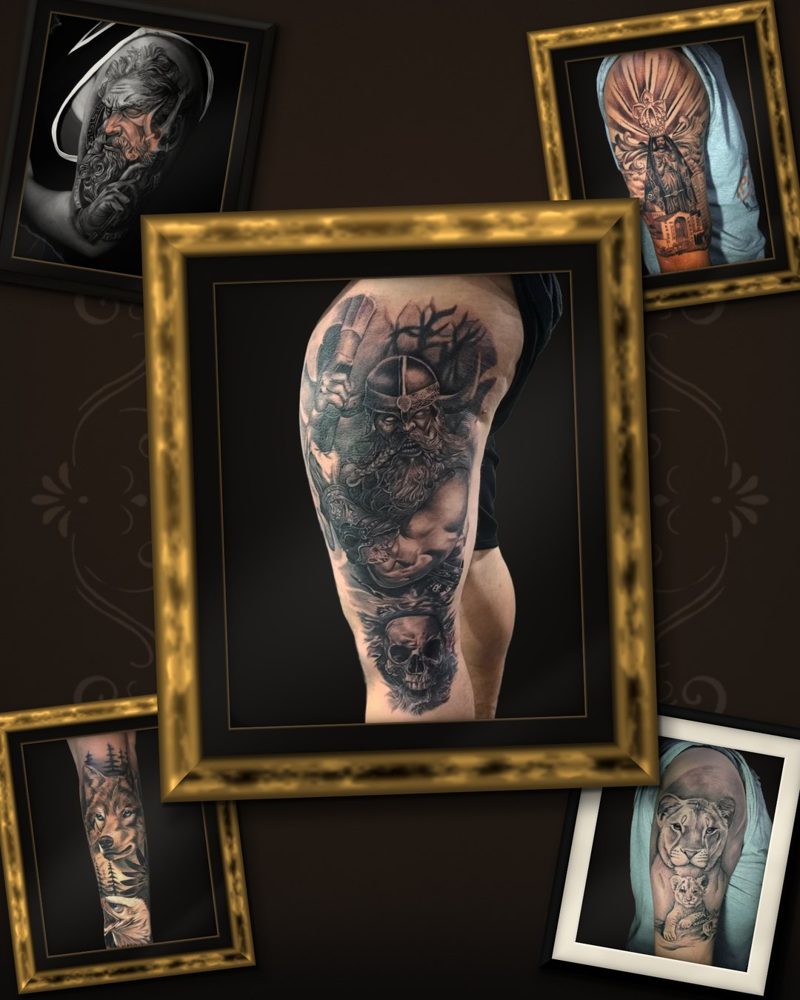
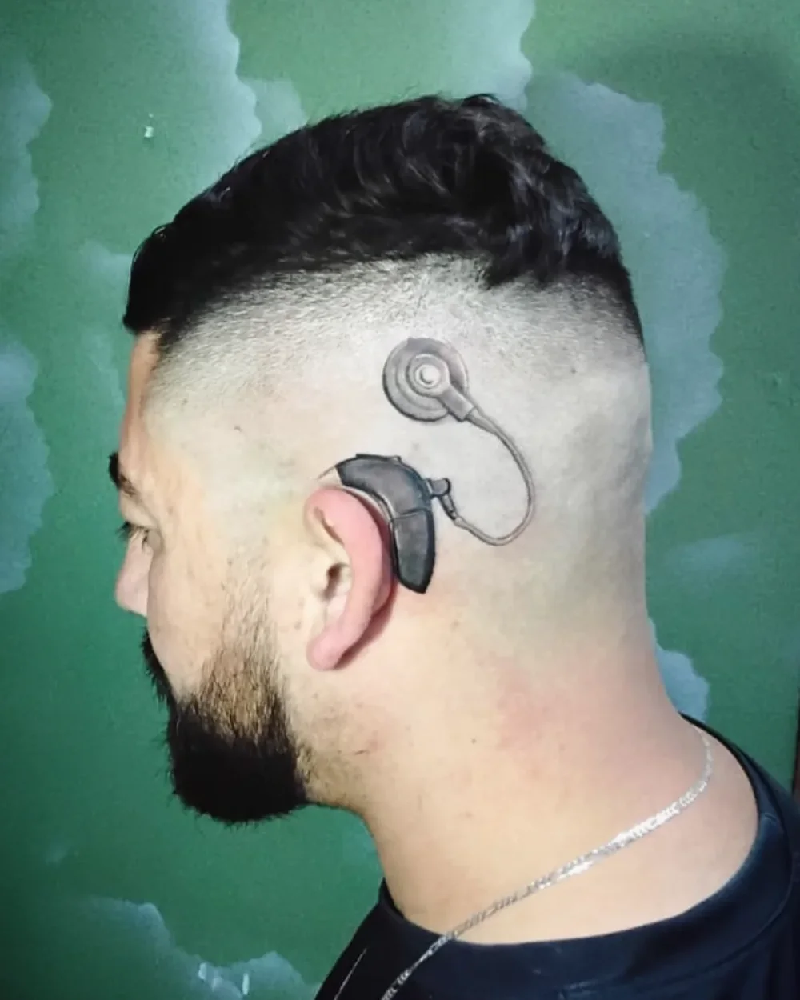
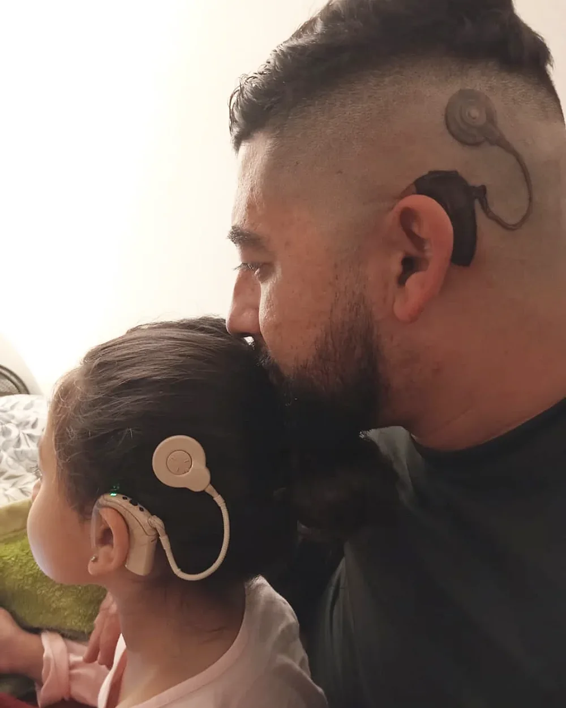
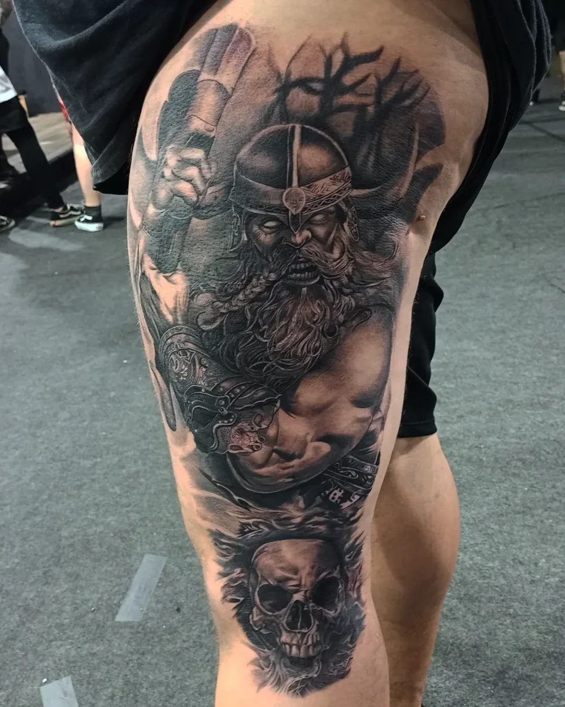
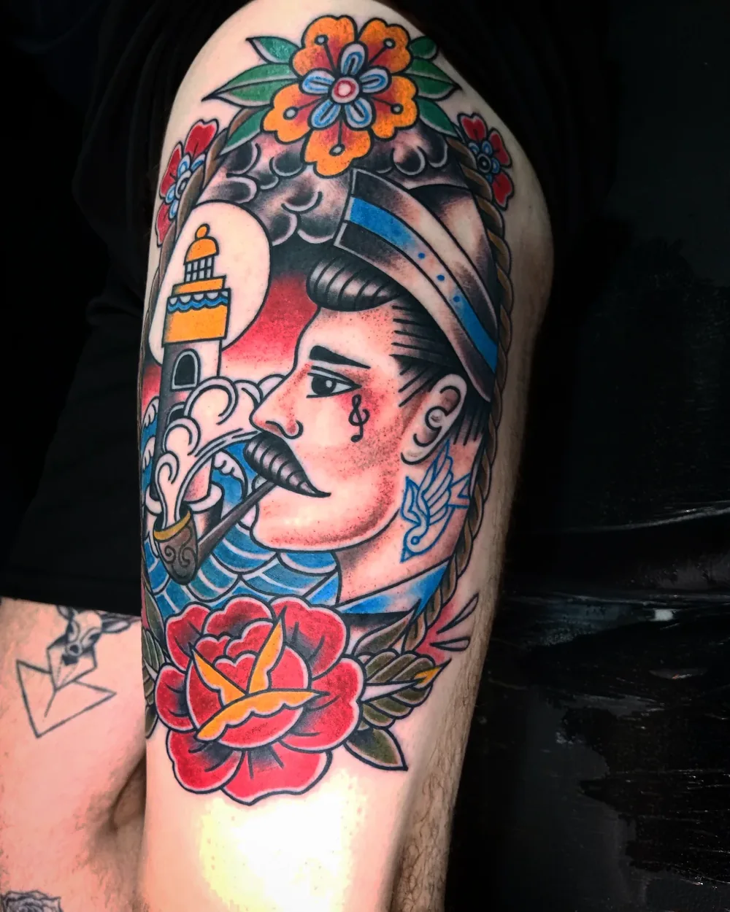
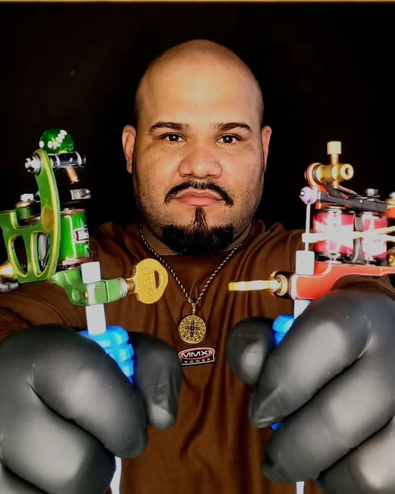

Preto e cinza · Old school · Campo Largo, PR
Rafa Souza
Mais do que tatuagens, são memórias na pele.
Trabalhos
Do realismo preto e cinza ao traço fino, sempre com arte exclusiva a partir da sua referência. Toque numa peça para ver em tamanho grande.
Memórias na pele
A tatuagem mais curtida do perfil cabe numa foto: o desenho na pele de um, o aparelho de verdade no outro. É para isso que o Rafa tatua.


Na convenção
“Não levamos o troféu, mas o respeito e o público que elogiou e acompanhou de perto pra mim já basta.”
Na Tattoo Stars de 2025, o Rafa apresentou duas peças feitas ao vivo, diante do público: um viking em preto e cinza, em 19 horas, e um old school colorido, em 7.


Tatuagem em eventos
Casamentos e aniversários
O Rafa leva a tatuagem para a sua festa: desenhos pequenos e exclusivos para os convidados, em Curitiba e região metropolitana.
Casamentos
Para o casal que quer deixar o grande dia ainda mais especial.
Aniversários
Uma atração diferente, que os convidados levam para casa.
Empresas
Para quem organiza eventos e quer surpreender o público.
Do jeito certo
Material descartável, higienização total e planejamento com quem contrata.

Sobre o Rafa
Rafa Souza tatua desde 2013 em Campo Largo, na região de Curitiba, e segue buscando evolução a cada peça.
Trabalha com todos os estilos. Os mais fortes são o realismo preto e cinza (feras, deuses, guerreiros e santos) e o old school. Também faz fine line, lettering e homenagens.
Cada arte é exclusiva, desenhada a partir da sua referência, com material descartável e esterilizado. Em 2025, recebeu o Prêmio RK9 em Campo Largo.
Ver o InstagramDepois da sessão
Os cuidados que o Rafa passa para a tatuagem cicatrizar bonita.
Curativo
Mantenha o curativo por pelo menos 3 horas depois da sessão.
Lavar
Água morna ou fria e sabão neutro, com a mão leve.
Hidratar
Camada fina de Bepantol Derma ou creme hidratante. Não arranque as casquinhas.
Proteger
Sem piscina, mar, rio ou sol forte até cicatrizar. Na dúvida, fale com o Rafa.
Estúdio
No centro de Campo Largo, no segundo andar. Atendimento com hora marcada.
- Endereço
- Rua Barão do Rio Branco, 1021 · 2º andar, sala 5 · Campo Largo, PR
- Orçamentos
- (41) 99751-6101
- @rafasouzatattoo
- Pagamento
- Parcela no cartão de crédito
Pedir orçamento
O pedido chega pronto no WhatsApp do Rafa, com tudo o que ele precisa para responder.
A ideia
Escolha o estilo e conte o que a tatuagem significa.
O local
Diga em que parte do corpo vai ficar.
O tamanho
Pequena, média, grande ou fechamento.
A referência
Na conversa, mande a imagem e uma foto do local.